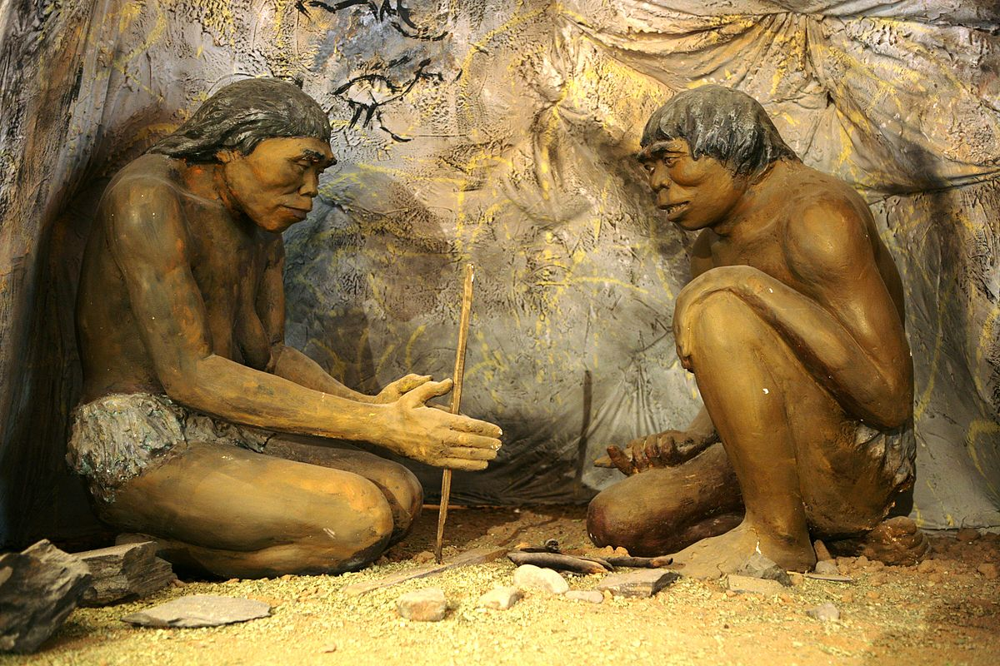
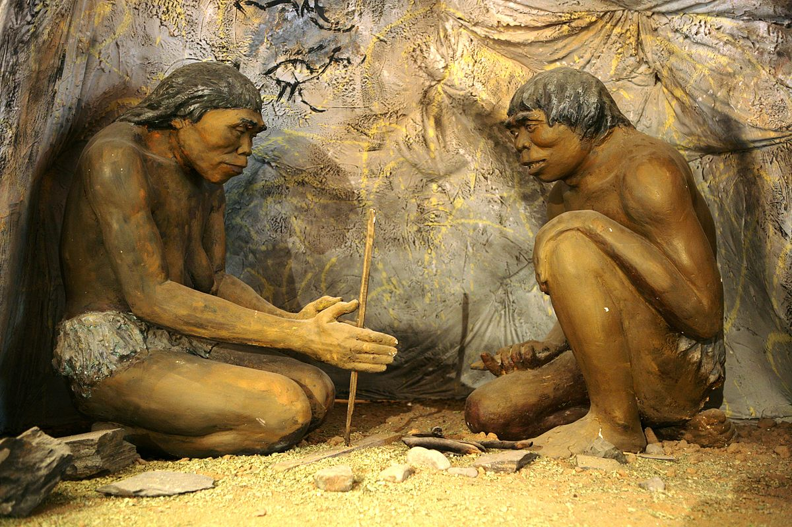

| SHPIKJET DHE ZBULIMET AKSIDENTALE | |
| Fishekzjarret | 2000 vjet më parë |
| Penicilina | 1929 |
| Dinamiti | Fund të shekullit XIX |
| Viagra | 1998 |
| Rrezet X | 1895 |
| Mikrovala | |
| Vazelina | |
Shpikjet që janë bërë ndër vite
1.Zjarri.
2.Pjekja dhe zierja e ushqimit
3.Thurja e rrobave
4.Enët prej balte
5.Veglat e punës
6.Zbutja e kafshëve të egra
7.Punimi i metaleve etj...
 

Zbulimet që janë bërë ndër vite
1.Ndërtesat e para të banimit
2.Zejtaria,tregtia,bujqësia...
3.Letra dhe kalendari i parë
4.Paga e parë
5.Makina për prodhimin e librave
6.U ndërtua aeroplani i parë
7.Treni i parë etj...